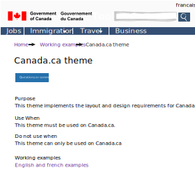
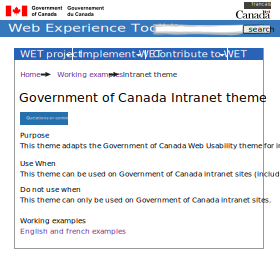
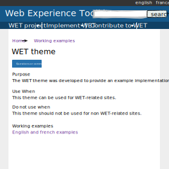

1
Choose a theme
There are five themes to choose from. You define the look and feel of your website through the cascading style sheet (CSS). If you are using a content management system, then you can find more information in variants.
Choose a theme
There are five themes to choose from. You define the look and feel of your website through the cascading style sheet (CSS). If you are using a content management system, then you can find more information in variants.
Canada.ca theme
Mandatory theme for Canada.ca users only. It implements requirements for Canada.ca
Examples Download v4.0Intranet theme
Built by the community for the community, ppen for re-use and adapting.
Examples Download v4.0WET theme
In use on this site, this theme is an example of how the base theme can be easily changed.
Examples Download v4.0
2
Components
The Toolkit contains reusable components to add interactive and accessible features to your site such as widgets, form validation, navigation menus, web feeds, and many more.
Components
The Toolkit contains reusable components to add interactive and accessible features to your site such as widgets, form validation, navigation menus, web feeds, and many more.
Plugins
Each plug-in adds functionality by calling the function in the class attribute of an HTML tag.
Featured Plug-in: Lightbox gallery


When a user clicks on, selects or holds the image, the photo gallery opens in a fullscreen lightbox where they can view the images one by one.
Learn morePolyfills
Polyfills are JavaScript components that mimic the behaviour of HTML5 tags in browsers in order to provide backwards compatibility for browsers that do not support HTML5.
Featured Polyfill: Autocomplete
For example, when a user types a V into a field called City, all cities beginning with V will appear in the text box.
Learn more
3
Design elements
This guide explains how to design front-end elements of your website by changing the cascading style sheet (CSS). Let the magic begin!
Design elements
This guide explains how to design front-end elements of your website by changing the cascading style sheet (CSS). Let the magic begin!
Core design elements
Here are some design elements listed that we suggest you look at first that are used often in designing a website.
Featured Example: Alert box
Well done!
You successfully read this important alert message.
Provide contextual feedback messages for typical user actions with the handful of available and flexible alert messages.
Learn more- Date modified: